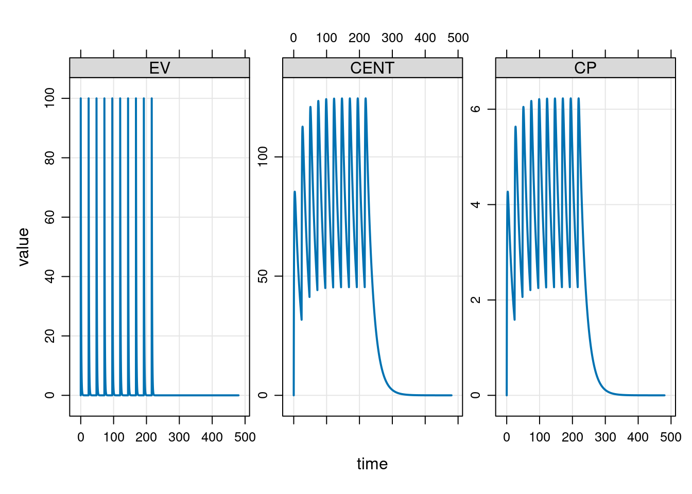

![]()
library(mrgsolve)Continuing my informal series of “Danielle learns pharmacometric modelling” posts, today I’ve decided to sit down and teach myself how to use the mrgsolve package in R.
As I’m rapidly coming to realise, the world of pharmacometric modelling is an intersting space where there are a large number of domain-specific languages that have been designed to solve a particular subset of the modelling problems faced by analysts in the field, and R serves as a lingua franca that stitches them all together and makes it possible to write analysis scripts that call on multiple tools.1
With that as the structure of the ecosystem, what you tend to find are packages that carve out a specific niche by building on top of some other tool. For this post, the niche we’re talking about is model-based simulation. In this context, it’s assumed that the analyst has a specific pharmacometric model in mind (e.g., one-compartment PK model,2 two-compartment PK model, etc etc). We are not attempting to estimate parameters from data, nor are we runing a model testing exercise. The model is presumed to exist already, usually because the analyst has already done the model fitting exercise using their tool of choice.3
Within the specific “model simulation” niche there are a number of R packages that people seem to use frequently. There’s the RxODE package4 and its successor rxode2, for example, and mrgsolve falls within the same general niche. I didn’t have any specific reason for deciding to learn mrgsolve first: I had to start somewhere and this seems as good a place as any.
A simple example
Okay, let’s get started. The mrgsolve package is build on top of an open source ODE solver,5 but the user doesn’t need to call it directly. Instead, a model is constructed using a model specification file (more on that later) that is then compiled to C++. This compiled model is used to run simulations, and it’s this compiled model that calls the ODE solvers. As a example, let’s use this code taken from the get started page, which uses modlib() to use one of the predefined model specifications that come bundled with mrgsolve:
mod <- modlib("pk1")Building pk1 ... done.In this code, "pk1" refers to the name of one of the model that comes bundled with mrgsolve… and there will be exactly zero pharmacometricians in this world that are surprised to discover that this is a one-compartment PK model with first-order absorption into the central compartment, and first-order elimination from the central compartment. If we print out the model object, we get a nice little summary:
mod
----------------- source: pk1.cpp -----------------
project: /home/danielle/R...gsolve/models
shared object: pk1-so-3fbc27212d78b
time: start: 0 end: 24 delta: 1
add: <none>
compartments: EV CENT [2]
parameters: CL V KA [3]
captures: CP [1]
omega: 0x0
sigma: 0x0
solver: atol: 1e-08 rtol: 1e-08 maxsteps: 20k
------------------------------------------------------A few months ago very little of this would have made sense to me, but I’ve – apparently – become familiar enough with conventions in pharamacometrics that this now looks very easy to read. For this initial example, the bits that matter most are these:
We have a list of compartments: CENT refers to the central compartment, and EV refers to an extravascular dosing compartment through which the drug is administered. Note that although there are two listed compartments, this is really a one-compartment model: the extravascular dosing compartments are a necessary part of the model formalism, but no more than that.
We have a list of parameters: clearance (CL) is a measure representing the volume of blood that can be fully cleared of the drug per unit time, volume of distribution (V) measures the size of the central compartment, and KA is the absorption rate constant governing how quickly the drug is absorbed from the extravascular compartment into the central compartment.
When running a simulation, the drug amounts in the compartments CENT and EV will be returned as part of the output. However, we can also specify other “captured” quantities, which in this case adds CP, the drug concentration in the central compartment.6
The parameter values (i.e. CL, V, KA) are part of the model specification, and you can see the values assigned to those parameters by calling param():
param(mod)
Model parameters (N=3):
name value . name value
CL 1 | V 20
KA 1 | . . We see that our model assumes a clearance (CL) of 1, an aborption rate constant (KA) of 1, and a volume of distribution equal to 20. The mrgsolve package doesn’t keep track of units: it’s up to the user to make sure all the units are on the appropriate scale.
Note that the param() function is both the “getter” and the “setter” for model parameters: param(mod) returns a parameter list object containing the parameters of mod, whereas param(mod, CL = 2, KA = 2) returns a modified model object with updated parameters. Later in the post I’ll use param() to modify model parameters in this way.
Okay so now we have a model object mod that specifies all our pharmacokinetic assumptions. In order to run a simulation, we also need to provide an event schedule that provides dosing information, and we’ll also need to say something about the time points at which we want to simulate the various pharmacokinetic quantities of interest. You can do this in a few different ways but for the purposes of the initial example I’ll do it the same way that the “get started” vignette does, and use a pipe-friendly workflow:
mod |>
ev(amt = 100, ii = 24, addl = 9) |>
mrgsim(start = 0, end = 480, delta = 0.1)Model: pk1
Dim: 4802 x 5
Time: 0 to 480
ID: 1
ID time EV CENT CP
1: 1 0.0 0.00 0.000 0.0000
2: 1 0.0 100.00 0.000 0.0000
3: 1 0.1 90.48 9.492 0.4746
4: 1 0.2 81.87 18.034 0.9017
5: 1 0.3 74.08 25.715 1.2858
6: 1 0.4 67.03 32.619 1.6309
7: 1 0.5 60.65 38.819 1.9409
8: 1 0.6 54.88 44.383 2.2191Here we take the mod object, pipe it to the ev() function that builds the event schedule, and then pipe the output to mrgsim() which then runs the simulation. In this code, the arguments to ev() are all very standard in the field:
amtis the amount of drugiiis the interdose intervaladdlis number of additional doses
The arguments to mrgsim() are used to specify the time points:
startis the initial time point (I actually didn’t need to specify it in ths case because the default value is 0)endis the final time pointdeltais the step size (i.e., the amount of time between successive time points)
The output here is a tabular data structure – not technically a data frame, but I’ll get to that – with sensible column names:
IDis a subject identifier (always 1 for this simple example)timeis the time point for the simulated measurementEVis the drug amount in the extravascular compartment (e.g., the gut, if we’re talking about oral dosing)CENTis the drug amount in the central compartmentCPis the drug concentration in the central compartment
To help you get a sense of what the simulation results look like, the mrgsolve package provides a plot method for simulation results, so if I’d wanted to I could add a call to plot() at the end of the pipeline, and get this as the output:
mod |>
ev(amt = 100, ii = 24, addl = 9) |>
mrgsim(start = 0, end = 480, delta = 0.1) |>
plot()
Very nice.
Simulation workflow
Now things get a little messier. The mrgsolve package is designed to support several different kinds of workflow, which is of course a good thing, but very often the price of analytic flexibility is function complexity. It takes some effort to understand all the moving parts to the package, and the different ways in which mrgsolve functions can be called.7
The model library
Let’s start by taking a closer look at the library of pre-specified models that come bundled with mrgsolve. They’re stored in a package folder whose location is accessible by calling modlib() with no arguments:
modlib()[1] "/home/danielle/R/x86_64-pc-linux-gnu-library/4.3/mrgsolve/models"As you can see, when called with no inputs modlib() doesn’t return a compiled model, and it simply returns the path to the model library folder. If you want a list of the models that come bundled with mrgsolve, you can call modlib() setting list = TRUE:
modlib(list = TRUE)mrgsolve internal library: effect tmdd viral1 viral2 emax irm1 irm2 irm3 irm4 pk1cmt pk2cmt pk3cmt pk1 pk2 pk2iv popex pred1 pbpk 1005 nm-likeFinally, if you want to build and use one of these model you can call modlib() and pass the name of the model you want as the model argument:
mod <- modlib(model = "pk1")Loading model from cache.It’s probably stating the obvious, but while the modlib() function works nicely as a tool to support analysts interactively, you probably wouldn’t call it as a developer. For instance, if you want to access the mrgsolve package folder that contains the models, you’d write code that makes very clear that you’re looking for a path (not trying to build a model). Something like this would work better:
fs::path_package("mrgsolve", "models")/home/danielle/R/x86_64-pc-linux-gnu-library/4.3/mrgsolve/modelsSimilarly, if you want to find the models in the model library folder, that’s easy enough to do with fs::dir_ls() and a simple regular expression. Easy done.
Building models from file
Along the same lines, building one of the bundled models using modlib() is a perfectly sensible thing to do when you’re just starting out and don’t want to write your own model specification files, but after a while you might want to pivot to a different workflow. To that end, there’s an mread() function – and related functions mread_file() and mread_cache() – that reads a model specification file and returns the model object linked to the compiled code. As an example, here’s how I’d use mread() to build the one-compartment model in the previous section:
dir <- fs::path_package("mrgsolve", "models")
mod <- mread(model = "pk1", project = dir)Building pk1 ... (waiting) ...
done.Optionally you can provide a file name for the model specification file that sits within the project folder, but in this case we don’t need to: if the file argument is unspecified mread() assumes that the file name is the same as the model name with file extension .cpp.8
Model objects
The mrgsolve package is built using S4 classes and of the great many object oriented programming systems available in R that’s the one I’m least comfortable with.9 But hey… I’ve just reread the S4 chapter in Advanced R, so let’s see how we go with this, shall we? First, I’ll be polite and explicitly load the methods package:
library(methods)Next let’s see what kind of object mod is and what methods are defined for it:
is(mod)[1] "mrgmod"methods(class = "mrgmod") [1] [ [[ $ all.equal
[5] as.environment as.list blocks cmtn
[9] data_set ev_rx ev evd
[13] idata_set init initialize knobs
[17] loadso names omat param
[21] req Req revar see
[25] show smat stime summary
[29] update within zero_re
see '?methods' for accessing help and source codeA lot of those methods are unsurprising. For example, the show() method is just the S4 analog of print(). When we print the mod object at the console we’re just calling its show() method:
show(mod)
----------------- source: pk1.cpp -----------------
project: /home/danielle/R...gsolve/models
shared object: pk1-so-3fbc21a2b760d
time: start: 0 end: 24 delta: 1
add: <none>
compartments: EV CENT [2]
parameters: CL V KA [3]
captures: CP [1]
omega: 0x0
sigma: 0x0
solver: atol: 1e-08 rtol: 1e-08 maxsteps: 20k
------------------------------------------------------But there are other methods that are kind of handy when inspecting a mrgmod object. For example, if we wanted to see the source code for the corresponding model specification file we could call the see() method:
see(mod)
Model file: pk1.cpp
$PARAM @annotated
CL : 1 : Clearance (volume/time)
V : 20 : Central volume (volume)
KA : 1 : Absorption rate constant (1/time)
$CMT @annotated
EV : Extravascular compartment
CENT : Central compartment
$GLOBAL
#define CP (CENT/V)
$PKMODEL ncmt = 1, depot = TRUE
$CAPTURE @annotated
CP : Plasma concentration (mass/volume)If we didn’t want quite that much detail, a summary() would have sufficed:
summary(mod)Model: pk1
- Parameters: [3]
CL, V, KA
- Compartments: [2]
EV, CENT
- Captured: [1]
CP
- Outputs: [3]
EV, CENT, CPI don’t intend to do an exhaustive walk through of all the methods defined for mrgmod objects. That would be tiresome, and in any case I don’t even know what all of them do yet. But what I will mention is that many of the methods exist to provide public accessors for these internal slots of a mrgmod object. To illustrate, here’s a list of all the slot names:
slotNames(mod) [1] "model" "modfile" "package" "soloc" "project" "start"
[7] "end" "delta" "add" "tscale" "digits" "quiet"
[13] "verbose" "debug" "preclean" "atol" "rtol" "ss_rtol"
[19] "ss_atol" "maxsteps" "hmin" "hmax" "ixpr" "mxhnil"
[25] "shlib" "funs" "omega" "sigma" "request" "param"
[31] "init" "capture" "Icap" "capL" "Icmt" "cmtL"
[37] "args" "fixed" "advan" "trans" "mindt" "code"
[43] "annot" "envir" "plugin" "ss_cmt" Okay so one of the slots is called “param”, and denoted @param to remind us that it’s a slot of an S4 object.10 Calling the param() method is the appropriate way to access the @param slot, for instance.11 The see() method is slightly fancier, but it too is essentially an accessor function for the @modelfile and @code slots. If I were an extremely unwise woman who ignored all the best practices for S4 classes I could use a command like cat(mod@code, sep = "\n") and get roughly the same output. This is of course a terrible idea: the slots of an S4 object are considered internal details and not part of the package API. Accessing them directly is considered a faux pas and you have only yourself to blame if the developer later changes the structure of the slots and your code breaks.
Indeed, the only reason I’m talking about them here is that I find it helpful for building my own mental model of what mrgsolve does, which will become apparent in the next section when I tackle the puzzlingly magical behaviour of the ev() function.
Event objects
Model objects represent the underlying ODE system. They don’t store information about “interventions” (external forcers) on the system. In the pharmacokinetic context the main intervention we’re thinking about is dosing. An events object returned by ev() returns a event schedule that would be familiar to any pharmacometrician:
events <- ev(amt = 100, ii = 24, addl = 9)
eventsEvents:
time amt ii addl cmt evid
1 0 100 24 9 1 1The events object looks a lot like a data frame, but is technically an S4 object with class “ev”. However, an ev object has only two slots, one of which is @data and – as you’d expect – it stores the data set as a data frame internally. So… yeah, it’s basically a data frame, and since there are as.data.frame() and as_tibble() methods defined for ev objects, so you can coerce it to whatever your preferred form of tabular data object happens to be.12 I’m a tibble girl myself so…
tibble::as_tibble(events)# A tibble: 1 × 6
time amt ii addl cmt evid
<dbl> <dbl> <dbl> <dbl> <dbl> <dbl>
1 0 100 24 9 1 1I’ll talk more about other ways to build fancier event schedules later, and you’ll see that it’s perfectly possible to use a simple data frame to specify an event schedule, but we’re not yet at the point where any of that is needed. Right now, all we’re trying to do is understand what happens in the simple simulation I showed at the start of this post.
Danielle briefly loses her f**king mind
Very soon I will move on to mrgsim(), the function that we use to run the simulation itself. Truly, we will get there soon. But we have one little matter to clear up first, related to the behaviour of ev().
The previous section makes it look as if ev() is very simple, and viewed from the analyst perspective it really is quite simple. You use it to construct event schedules. However, ev() is not a simple function. It’s an S4 generic with dispatch on the first argument13 and it returns a qualitatively different kind of object when called in a pipeline.
To understand the “Danielle briefly loses her f**king mind” aspect to this, let’s return to the model simulation pipeline that I lifted from the “Get Started” vignette and used at the start of the post:
mod |>
ev(amt = 100, ii = 24, addl = 9) |>
mrgsim(end = 480, delta = 0.1)Model: pk1
Dim: 4802 x 5
Time: 0 to 480
ID: 1
ID time EV CENT CP
1: 1 0.0 0.00 0.000 0.0000
2: 1 0.0 100.00 0.000 0.0000
3: 1 0.1 90.48 9.492 0.4746
4: 1 0.2 81.87 18.034 0.9017
5: 1 0.3 74.08 25.715 1.2858
6: 1 0.4 67.03 32.619 1.6309
7: 1 0.5 60.65 38.819 1.9409
8: 1 0.6 54.88 44.383 2.2191If you’re expecting ev() to return an “ev” object – as indeed it would if I called ev(amt = 100, ii = 24, addl = 9) outside of a pipeline – this code makes absolutely no sense whatsoever. An “ev” object simply does not have the information required to run the simulations. Running a model-based simulation requires an actual model, and an “ev” object does not contain any slots that could possibly store a model object. So… something magical is happening. This code shouldn’t work, but it does???
I cried briefly. Then I read the documentation properly. Then I cried some more.
After reading the documentation carefully, I now understand what’s going on here, but an explanation is required because if you don’t look closely it looks like magic.14 When the first argument to ev() is a model object, it doesn’t return an event schedule. Instead, it returns another model object.15
ev(mod, amt = 100, ii = 24, addl = 9)
----------------- source: pk1.cpp -----------------
project: /home/danielle/R...gsolve/models
shared object: pk1-so-3fbc21a2b760d
time: start: 0 end: 24 delta: 1
add: <none>
compartments: EV CENT [2]
parameters: CL V KA [3]
captures: CP [1]
omega: 0x0
sigma: 0x0
solver: atol: 1e-08 rtol: 1e-08 maxsteps: 20k
------------------------------------------------------Looking at the printed output, you might think that the output here is identical to the original model object mod, but in this case looks are deceiving. The new model stores the event schedule internally: it’s tucked away in the @args slot.16 To illustrate, let’s assign the output to a variable:
mod_with_ev <- ev(mod, amt = 100, ii = 24, addl = 9)Now compare the pair:
mod@argslist()mod_with_ev@args$events
Events:
time amt ii addl cmt evid
1 0 100 24 9 1 1So now things become a little clearer. After seeing this, what you might – correctly! – conclude is that at the other end of the pipeline the mrgsim() function is aware that the event schedule might not be passed explicitly, and knows to check within the model object if that is the case. Knowing all this, we’re now in a position to understand what happens during a pipeline like this:
modlib("pk1", quiet = TRUE) |>
ev(amt = 100, ii = 24, addl = 9) |>
mrgsim(end = 480, delta = 0.1)It’s a clever trick, and I imagine it’s something that a lot of data analysts find super handy. That said, it’s probably not something I would use myself. I’m a simple girl who likes her coffee black and her data pipelines transparent, so I’d probably avoid this particular workflow and instead write code that looks more like this:
# set up the simulation
dir <- fs::path_package("mrgsolve", "models")
mod <- mread_file(file = "pk1.cpp", project = dir, quiet = TRUE)
events <- ev(amt = 100, ii = 24, addl = 9)
# run the simulation
out <- mrgsim_e(mod, events = events, end = 480, delta = 0.1)Notice that I called mrgsim_e() here rather than mrgsim(). Because mrgsolve recognises that sometimes developers might want to call simulation functions programmatically, it provides several restricted versions of mrgsim() that require input in a specific format. The sneaky “event-schedule-inside-the-model-object” piping trick I showed at the start of the post does not work with mrgsim_e(), which – at least to my mind – makes it a safer choice when running simulations programmatically. Later in this post you’ll see me pivot to using mrgsim_d(), for much the same reason.
Data frames as event schedules
In the last section I kind of wrapped myself up in knots trying to get a handle on what ev() does under the hood, and as you can probably tell I have some mixed feelings about it. Fortunately, you don’t have to use it at all if you don’t want to: the mrgsim_d() function takes regular data frame as the data argument, and which plays the same role as the events argument in mrgsim_e(). You can generate event schedules in data frame format using the ev_expand() function:
ev_expand(amt = 100, ii = 24, addl = 9) ID time amt ii addl cmt evid
1 1 0 100 24 9 1 1The output here looks the same, but this time the output is a regular data frame, and so to be defensive in our code we would call mrgsim_d() to run a simulation that requires a data frame as input:
# set up the simulation
dir <- fs::path_package("mrgsolve", "models")
mod <- mread_file(file = "pk1.cpp", project = dir, quiet = TRUE)
events <- ev_expand(amt = 100, ii = 24, addl = 9)
# run the simulation
out <- mrgsim_d(mod, data = events, end = 480, delta = 0.1)As an aside, you might be wondering why this function is named ev_expand(). It’s not obvious from the example I showed above, but the ev_expand() function is essentially a convenience function that calls to expand.grid() to combine the levels of all variables input, with some extra syntactic sugar that auto-populates certain columns that are required for event schedule data sets. As an example, you might generate an event schedule defined for multiple subjects using a command like this:
ev_expand(amt = 100, ii = 24, addl = 9, ID = 1:6) ID time amt ii addl cmt evid
1 1 0 100 24 9 1 1
2 2 0 100 24 9 1 1
3 3 0 100 24 9 1 1
4 4 0 100 24 9 1 1
5 5 0 100 24 9 1 1
6 6 0 100 24 9 1 1Later in this post I’ll use ev_expand() in exactly this way.
Simulation times
We’re almost done unpacking the simple example, but I want to rewrite the code one last time. Until now, every time I’ve mrgsim() and its variants I’ve passed arguments end and delta as a way to override the default assumptions about what time points we would use when running our simulations. Internally, these arguments are used to construct a “tgrid” object that specifies the time points. We can construct this object explicitly by calling tgrid():
tgrid(start = 0, end = 480, delta = 0.1)start: 0 end: 480 delta: 0.1 offset: 0 min: 0 max: 480 Using this knowledge, we can now write our simulation code like this:
# set up the simulation
dir <- fs::path_package("mrgsolve", "models")
mod <- mread_file(file = "pk1.cpp", project = dir, quiet = TRUE)
events <- ev_expand(amt = 100, ii = 24, addl = 9)
times <- tgrid(start = 0, end = 480, delta = 0.1)
# run simulation
out <- mrgsim_d(x = mod, data = events, tgrid = times)For the simple example, calling tgrid() explicitly doesn’t by us much, but if you dive into the documentation a little you discover that there are tools for working with tgrid objects that allow you to define the simulation times in much richer ways than a simple grid. But I digress.
Simulation code
Taking a step back, it’s worth thinking a little about the code I’ve ended up with. The piped code I started with probably works nicely for some people, but it’s not my preferred way to do this. The way I think of these things, a simulation has three main inputs (model object, event schedule, simulation times), and I find the code easier to read when these three inputs are passed as three separate arguments. The syntax used to specify the original simulation pipeline is very compact…
out <- modlib("pk1", quiet = TRUE) |>
ev(amt = 100, ii = 24, addl = 9) |>
mrgsim(end = 480, delta = 0.1)…but that compactness comes at the expense of slightly obfuscating the inputs to mrgsim(). By way of contrast, this version of the code is considerably more verbose…
# this would normally be the project folder
dir <- fs::path_package("mrgsolve", "models")
# define model, events, and times
mod <- mread_file(file = "pk1.cpp", project = dir, quiet = TRUE)
events <- ev_expand(amt = 100, ii = 24, addl = 9)
times <- tgrid(start = 0, end = 480, delta = 0.1)
# run simulation
out <- mrgsim_d(x = mod, data = events, tgrid = times)…but personally I find it a little easier to understand the structure of the simulation when its written like this. Other people might have different views though.
Simulation output
At this point the simulation is complete, so we can turn our attention to the output we’ve created. Here’s an example of the output returned by mrgsim() and its friends:
outModel: pk1
Dim: 4802 x 5
Time: 0 to 480
ID: 1
ID time EV CENT CP
1: 1 0.0 0.00 0.000 0.0000
2: 1 0.0 100.00 0.000 0.0000
3: 1 0.1 90.48 9.492 0.4746
4: 1 0.2 81.87 18.034 0.9017
5: 1 0.3 74.08 25.715 1.2858
6: 1 0.4 67.03 32.619 1.6309
7: 1 0.5 60.65 38.819 1.9409
8: 1 0.6 54.88 44.383 2.2191As you’ve probably come to expect at this point, this is not technically a data frame, it’s an S4 object of class “mrgsims”, and can easily be coerced to a data frame using as.data.frame() or as_tibble().
The mrgsolve package supplies a plot method for mrgsims objects that generates nice looking lattice plots, making it very easy to quickly produce helpful data visualisations:
plot(out)
The plot method allows you to customise the plot in a fairly flexible way, but there are some limits to what you can do with this approach. It’s not a big drawback though. If additional customisation is needed it’s pretty easy to convert the output to a tibble and then using ggplot2 to create the specific visualisation you want:
library(ggplot2)
out |>
tibble::as_tibble() |>
tidyr::pivot_longer(
cols = c(EV, CENT, CP),
names_to = "variable",
values_to = "value"
) |>
dplyr::mutate(
variable = dplyr::case_when(
variable == "EV" ~ "Gut amount",
variable == "CENT" ~ "Central amount",
variable == "CP" ~ "Central concentration"
)
) |>
ggplot(aes(time, value)) +
geom_line() +
facet_wrap(~ variable, scales = "free_y") +
theme_bw() +
theme(strip.background = element_rect(fill = "white")) +
labs(
title = "Drug amounts and concentrations over time",
x = "Time (hours)",
y = NULL
)Model specification
Up till now I’ve been relying entirely on prespecified pharmacokinetic models included in the mrgsolve model library. That was a useful thing to do earlier in this post while discussing the mechanics of mrgsim(), ev(), mread(), tgrid() and so on, but in practice you really need to understand how models are specified. I’m not going to attempt a comprehensive discussion of this topic, but if you want more detail, the chapters in the user guide I found most relevant are:
Example 1: Two compartment PK model
There are two ways to specify a model in mrgsolve: you can pass a string to mread_code(), or you can read it from a model specification file using mread_file(). I’ll be using the latter method here. By convention, model specification files use a “.cpp” file extension, but it’s important to recognise that despite that, a model specification file is not, strictly speaking, C++ code. A model specification consists of a set of code blocks, and only some of those code blocks contain C++ code. Some blocks use R syntax, and others are plain text.17
In any case, the first model specification I wrote is contained in the example1.cpp file bundled with this post, and is a very modest tweak to one of the models distributed with the mrgsolve package. Here’s what the file looks like:
example1.cpp
[PROB]
This is a minor variation of the "pk2cmt" model that is distributed as
part of the mrgsolve internal model library. It has a single extravascular
dosing compartment (the GUT), a central compartment (CENT), and a
peripheral compartment (PERIPH). Absorption from GUT is first order,
whereas elimination from CENT follows Michaelis-Menten kinetics.
[PARAM] @annotated
VC : 20 : Central volume (volume)
Q : 2 : Inter-compartmental clearance (volume/time)
VP : 10 : Peripheral volume of distribution (volume)
KA : 0.5 : Absorption rate constant (1/time)
VMAX : 1 : Maximum velocity of elimination (mass/time)
KM : 2 : Michaelis constant for elimination (mass/volume)
[CMT] @annotated
GUT : Drug amount in gut (mass)
CENT : Drug amount in central compartment (mass)
PERIPH : Drug amount in peripherhal compartment (mass)
[GLOBAL]
#define CP (CENT / VC) // concentration in central compartment
#define CT (PERIPH / VP) // concentration in peripheral compartment
#define CLNL (VMAX / (KM + CP)) // non-linear clearance, per MM kinetics
[ODE]
dxdt_GUT = -KA * GUT;
dxdt_CENT = KA * GUT - (CLNL + Q) * CP + Q * CT;
dxdt_PERIPH = (Q * CP) - (Q * CT);
[CAPTURE] @annotated
CP : Plasma concentration (mass/time)There are six code blocks in this file. I’ve specified them using square brackets (e.g., [BLOCKNAME]) because it reminds me of TOML, but it’s also valid to use the dollar sign (e.g., $BLOCKNAME).18 Block names are case insensitive: mrgsolve treats [BLOCKNAME] and [blockname] identically. The order in which you specify blocks doesn’t matter, but the order of statements within a block often does matter because some blocks are interpreted as C++ or R code.
The interpretation of these blocks is as follows:
The
[PROB]block is purely used to specify comments or notes on the model. It has no functional effect. You’ll very often see this block written in markdown format.The
[PARAM]block is used to pass a list of parameter values to be used in the model. When parsing this code block, mrgsolve interprets the values as R expressions (evaluated at build time), so if you were to define the central compartment volumeVCto besqrt(400), the resulting model would storeVCas the numeric value20within the internal parameter list. Normally, parameters would be defined as a comma separated list of name-value pairs (e.g.,VC = 20, Q = 2, ...), but when you use the@annotatedoption as I have done here, you can writeVC : 20 : Central volume (volume). This version of the syntax allows you to provide comments on how each parameter is interpreted. Many of the code blocks support the@annotatedoption, and in most cases I find myself strongly preferring the annotated syntax.The
[CMT]block is used to specify compartment names, and much like the[PARAM]block it supports the@annotatedkeyword. By default, all compartments are presumed to be initialised with value 0. If you need to set different initial values for the drug amounts in each compartment, use an[INIT]block instead of a[CMT]block.The
[GLOBAL]block is used to specify global variables and preprocessor directives in the C++ code that mrgsolve constructs from the model specification file. This block is, not surprisingly, interpreted as literal C++ code. In this example I’ve used the#definedirective to indicate that the plasma concentrationCPis simply an alias for(CENT / VP), and similarly the tissue19 concentrationCTis an alias for(PERIPH / VP), and so on.The
[ODE]block is used to specify the differential equations that define the model. For every compartment in your model there is a correspondingdxdt_variable: for instance, ifCENTdenotes the drug amount in the central compartment, then there is automatically a variabledxdt_CENTthat denotes its first derivative with respect to time, and you must specify the value for all compartment derivatives even if they are zero. The[ODE]block is interpreted as literal C++ code, and you can declare and initialise new variables within the[ODE]block if you want to. Note that you may sometimes see a[DES]code block instead of an[ODE]block. They’re the same thing:[DES]is an alias for[ODE].The
[CAPTURE]block is used to indicate variables that should be “captured” in the simulation and returned to the user in R whenmrgsim()is called. The user guide doesn’t say so explicitly, but from what I can tell the compartment amount variables are always captured, and you don’t need to list those here. The only things you need to specify here are the other quantities that you want the simulation to return. It supports the@annotatedkeyword, and I’ve used that here because honestly my sanity dissolves very quickly when trying to read model specification files that don’t use the annotations.
Okay, now that I’ve written my model specification file let’s pivot back to my R session and use it to run a simulation:
# define model, events, and times
mod <- mread_file(file = "example1.cpp", quiet = TRUE)
events <- ev_expand(amt = 10, ii = 24, addl = 19)
times <- tgrid(start = 0, end = 960, delta = 0.2)
# run simulation and plot results
out <- mrgsim_d(mod, data = events, tgrid = times)
plot(out)Yes, that all seems to work nicely. No, I did not have any solid justification for choosing these parameters. It’s just a toy.
Example 2: Two compartment population-PK model
The simulation in the previous section is relatively simple. It’s a one compartment model, there are no random effects or covariates, and the simulation involves only a single subject. The nonlinear clearance aspect is a little fancy, since Michaelis-Menten kinetics aren’t entirely simple, but apart from that there’s not much going on in this model.
Time to add some complexity. This time around I’ll build a standard two compartment model with first-order absorption and first-order elimination, but I’ll now allow random effects on all model parameters. Conventionally,20 the variables in a population-PK model follow a uniform convention, and this is very often mirrored in software and analysis code. I’m now familiar enough with PK modelling that I’ve internalised these conventions, but since the audience of my blog is wider, here are the key ones:
- Population typical values are denoted with thetas (\(\theta\), \(\boldsymbol\theta\), \(\boldsymbol\Theta\))21
- Population scale parameters are denoted with omegas (\(\omega\), \(\boldsymbol\omega\), \(\boldsymbol\Omega\))
- Random effect terms are denoted with etas (\(\eta\), \(\boldsymbol\eta\))
- Variability of the measurement is denoted with sigmas (\(\sigma\), \(\boldsymbol\sigma\), \(\boldsymbol\Sigma\))
With that little refresher out of the way, let’s have a look at the model specification file:
example2.cpp
[PROB]
This is a population-PK two-compartment model.
[PARAM] @annotated
TVVC : 20 : Typical value for VC (volume)
TVVP : 10 : Typical value for VP (volume)
TVKA : 1 : Typical value for KA (1/time)
TVCL : 1 : Typical value for CL (volume/time)
TVQ : 2 : Typical value for Q (volume/time)
[OMEGA] @annotated
EVC : 2 : Variance of random effect on VC
EVP : 1 : Variance of random effect on VP
EKA : 0.1 : Variance of random effect on KA
ECL : 0.1 : Variance of random effect on CL
EQ : 0.1 : Variance of random effect on Q
[MAIN]
double VC = TVVC * exp(EVC); // central compartment volume
double VP = TVVP * exp(EVP); // peripheral compartment volume
double KA = TVKA * exp(EKA); // absorption rate constant
double CL = TVCL * exp(ECL); // clearance
double Q = TVQ * exp(EQ); // intercompartmental clearance
[CMT] @annotated
GUT : Drug amount in gut (mass)
CENT : Drug amount in central compartment (mass)
PERIPH : Drug amount in peripherhal compartment (mass)
[GLOBAL]
#define CP (CENT / VC) // concentration in central compartment
#define CT (PERIPH / VP) // concentration in peripheral compartment
[ODE]
dxdt_GUT = -(KA * GUT);
dxdt_CENT = (KA * GUT) - (CL + Q) * CP + (Q * CT);
dxdt_PERIPH = (Q * CP) - (Q * CT);
[CAPTURE] @annotated
CP : Plasma concentration (mass/time)Things to notice here:
The
[PARAM]block is essentially the same as last time. The only difference is that I’ve now given all the variables a “TV” prefix, to indicate that they now refer to the population typical value for the corresponding quantity (e.g.,TVCLis the typical value for clearanceCL). I would have preferred a different naming scheme, personally, but since this approach is pretty standard in the field I’ll adhere to it. In any case, these “typical value” variables collectively form the \(\boldsymbol\theta\) vector of fixed effects in the model.The purpose of the
[OMEGA]block to specify a variance-covariance matrix \(\boldsymbol\Omega\), such that the vector of random effects \(\boldsymbol\eta_i\) for the \(i\)-th simulated person is sampled from a multivariate normal distribution, \(\boldsymbol\eta_i \sim \mbox{Normal}(\boldsymbol{0}, \boldsymbol\Omega)\). By default, mrgsolve assumes that \(\boldsymbol\Omega\) is a diagonal matrix, so all you need to do is specify the vector of variances along the main diagonal.22 The[OMEGA]block supports the@annotatedoption, which I’ve used here to provide human-readable explanations of each of the terms. Note that the variable names I’ve used here are things likeECL,EVP, and so on: the “E” prefix is short for “ETA” and indicates that they refer to the value of the sampled random effect term (i.e., an \(\eta\) value), not the variance itself (i.e., an \(\omega\) value). In that sense I find it helpful to think of the[OMEGA]block as specifying the sampling scheme for the random effect terms, rather than literally a covariance matrix.The
[MAIN]block, as you might expect given the name, is interpreted with C++ syntax.23 It serves multiple purposes, but what I’m using it for here is specifying relationships between variables. For instance, the code on line 26 defines the clearanceCLfor a specific subject as the product of the population typical valueTVCLand the exponentiated random effectexp(ECL).24The
[CMT],[GLOBAL],[ODE], and[CAPTURE]blocks are all more or less as they were before. The code is a little different because the model is different, but there’s no new concepts required to read these blocks.
Now that we’ve talked through the code, let’s go back to R and run a simulation using this model. In the extract below I’ve run a small simulation with six individuals. They all have the same dosing schedule, but we end up with different data in each case because the model samples the random effect terms separately for each person:
# define model, events, and times
mod <- mread_file(file = "example2.cpp", quiet = TRUE)
events <- ev_expand(amt = 10, ii = 24, addl = 11, ID = 1:6)
times <- tgrid(start = 0, end = 480, delta = 0.1)
# run simulation and plot results
out <- mrgsim_d(mod, data = events, tgrid = times)
plot(out)As before, I haven’t tried to choose model parameters in the principled way: I just wanted to make sure the code is functioning properly.
Example 3: Other customisations
I’ll go through one last example, just to illustrate some of the other things you can build into your model specification file. The code below specifies a one-compartment population-PK model, and it incorporates a few features that haven’t appeared in any of the examples so far. First, the code:
example3.cpp
[PROB]
This is an example adapted from the user guide "topics" section.
[PARAM] @annotated
TVCL : 1.1 : Typical clearance (L/hr)
TVV : 35.6 : Typical volume of distribution (L)
TVKA : 1.35 : Typical absorption rate constant (1/hr)
WT : 70 : Weight (kg)
SEX : 0 : Sex coded as male = 0, female = 1
WTCL : 0.75 : Coefficient for the effect of weight on CL
SEXV : 0.878 : Coefficient for the effect of sex = 1 on V
[MAIN]
double CL = TVCL * pow(WT/70, WTCL) * exp(ECL);
double V = TVV * pow(SEXV, SEX) * exp(EV);
double KA = TVKA * exp(EKA);
[OMEGA] @correlation @block @annotated
ECL : 1.23 : Random effect on CL
EV : 0.67 0.4 : Random effect on V
EKA : 0.25 0.87 0.2 : Random effect on KA
[SIGMA] @annotated
PROP: 0.005 : Proportional residual error
ADD : 0.0001 : Additive residual error
[CMT] @annotated
GUT : Dosing compartment (mg)
CENT : Central compartment (mg)
[PKMODEL]
ncmt = 1, depot = TRUE
[TABLE]
double CP = CENT / V;
double DV = CP * (1 + PROP) + ADD;
[CAPTURE] @annotated
CP : True plasma concentration (mg/L)
DV : Observed plasma concentration (mg/L)There’s a few things to note here.
There is a binary-valued covariate
SEX25 and a continuous covariateWT(weight) specified in the[PARAM]block. Coefficients specifying the effect of sex on distribution volumeSEXVand the effect of weight on clearanceWTCLare also included in the[PARAM]block. Although from a statistical perspective the value of the covariate that varies across person (WT) and the regression coefficient specifying an effectWTCLare very different kinds of thing, from a simulation perspective they’re both just numbers you can feed into the expressions in the[MAIN]block that define the pharmacokinetic quantitiesCL,V, andKA.The
[OMEGA]block now has correlated random effects. I’ve used the@blockoption to indicate that the off-diagonal elements are included in the code block, and the@correlationoption to indicate that the off-diagonal elements are correlations (rather than covariances).We now have sources of measurement error included in the model specification. The scale of the noise terms is set in the
[SIGMA]code block, and for this model we include both proportional error (variability scales proportional to the true value) and additive error (constant variability of error). Note that the[SIGMA]block is used only to declare the variables and set their values. To actually incorporate the measurement error into the model code, we use the[TABLE]block.The
[TABLE]block contains C++ code that is executed at the end of each time step, before the simulation steps forward to the next point in time. At this point the drug amounts in each compartment have been computed, as have any time-point dependent stochastic terms (i.e., the noise terms specified in the[SIGMA]block), and we can use them to calculate other quantities. In this case, I’ve used the[TABLE]block to calculate the blood plasma concentrationCP, and to calculate a hypothetical dependent variableDVthat has noise added.The
[ODE]block has been replaced with a[PKMODEL]block. This is used to indicate that mrgsolve should use analytic solutions rather than an ODE solver. As you might expect, this is only possible for a smallish subset of models that (a) have analytic solutions that (b) are known to mrgsolve. In this particular case the model is a standard one-compartment model, for which analytic solutions are available. Thencmt = 1part of this block indicates that it’s a one-compartment model, and thedepot = TRUEpart indicates that the dosing compartment (the gut, in this case) should be included in the model even though it’s not a “real” compartment. Additional information on how this code block is parsed is here.
To see all this at work, let’s run a small simulation. First, we’ll read the model specification file and compile the model:
mod <- mread_file(file = "example3.cpp", quiet = TRUE)Next, let’s take a look at the default parameters in this model. As you can see in the output, by default the subject is presumed to be a male who weighs 70kg:
param(mod)
Model parameters (N=7):
name value . name value
SEX 0 | TVV 35.6
SEXV 0.878 | WT 70
TVCL 1.1 | WTCL 0.75
TVKA 1.35 | . . As usual, we’ll specify some dosing events and some time points at which the simulation will be evaluated. I’ll also set it up that we always simulate two subjects at whatever parameter values we feed into the simulation:
events <- ev_expand(amt = 10, ii = 48, addl = 3, ID = 1:2)
times <- tgrid(start = 0, end = 240, delta = 0.5)Okay, now let’s run a simulation at the default parameter values. Here’s some data from two male subjects who both weigh 70kg:
out <- mrgsim_d(mod, data = events, tgrid = times)
plot(out, ~ CP + DV)The ~ CP + DV formula in the plot() command is used to control which variables are plotted. I don’t want to show everything in these plots: we’re showing the drug concentration in the central compartment CP, and the hypothetical dependent variable DV obtained by adding measurement error to the CP value.
But suppose we didn’t actually want to simulate a 70kg male, and instead we want a 60kg female. To specify this, we have to update the relevant parameters in the model:
mod <- param(mod, SEX = 1, WT = 60)So now our model parameters look like this:
param(mod)
Model parameters (N=7):
name value . name value
SEX 1 | TVV 35.6
SEXV 0.878 | WT 60
TVCL 1.1 | WTCL 0.75
TVKA 1.35 | . . Simulating from the model at these parameter settings gives us this:
out <- mrgsim_d(mod, data = events, tgrid = times)
plot(out, ~ CP + DV)Resources
Before wrapping up, some quick links to some resources:
The mrgsolve user guide is probably not the place you want to start, because it very quickly dives in deep and talks about the domain specific language used to specify models, but once you’ve wrapped your head around the basics that’s the place to look for details.
The mrgsolve vignettes provide a nice place to start, but one thing you need to keep in mind is that the vignettes posted at mrgsolve.org/vignettes are not identical to the vignettes that appear on the pkgdown website (i.e., mrgsolve.org/docs/articles), so it’s worth being careful to check which one you’re looking at!
Speaking of which, the mrgsolve pkgdown site provides all the usual documentation that you’d expect of an R package in the usual format. Function reference guides, some vignettes, links to github, etc., all that is there.
The learn mrgsolve page on the mrgsolve website has links to presentations, courses, and other things that can be helpful in getting started.
Finally, there’s a blog associated with the package that has a variety of tips, tricks, updates and news.
Epilogue
As with so many of my posts, I find that I’ve gotten to the end and I have no idea what else to say. I don’t write a post like this one to advocate for a package or a workflow, and I definitely don’t write these things to express opinions or whatever. I write because I enjoy writing and because the act of writing deepens my own understanding of a topic. Viewed from that perspective, writing this post has served its purpose so… mission accomplished?
Footnotes
In this respect R is the unchallenged queen of languages in pharmacometrics. It’s very different to data science in the tech space, where Python is the lingua franca and R is seen as a second-class citizen. I have not yet seen a single example of anyone using Python for data analysis in this world. Judging from papers I’ve read, Julia has a small presence (e.g., you can use Turing.jl for building ODE models in Julia), but that’s the only time I’ve ever seen any statistical language other than R in this space.↩︎
The acronym PK is universally used as shorthand for “pharmacokinetics”, and a PK model is one where the primary variable you’re interested in modelling is the plasma concentration over time for some drug. If you’re totally new to this space, the post I wrote on non-compartmental analysis was written from a total-newbie perspective and spells out a lot the basic terminology used in PK modelling.↩︎
There are a lot of tools in this space: NONMEM is the oldest and most-widely used, but in addition there’s Stan/Torsten, Monolix, nlmixr, Phoenix NLME, and probably many others I don’t know about yet…↩︎
I can’t tell if the original package is still under active development or if it’s been deprecated. The RxODE package still appears on the nlmixr website and on GitHub, but the package is (at present?) archived on CRAN.↩︎
Specifically, it wraps the public domain Fortran library ODEPACK.↩︎
In this example it’s not very interesting because CP is just the ratio of CENT and V, and since V doesn’t change over time, the curves for CP and CENT look identical. That isn’t true for simulations with multiple sujects, however, since V can and does vary across individuals.↩︎
As an aside, one thing I’ve noticed in the software development world is that developers who don’t work in statistics have a tendency to get very worked up about R having all these hyper-flexible functions that can behave in wildly different ways in different contexts. While I do understand that annoyance, I also think it’s often misplaced. R is fundamentally a statistical programming language and the primary goal is to support analysts. It’s not trying to be Python, and it’s even less interested in being Rust. You wouldn’t think so from social media discussions – which are massively skewed towards developers – but the typical R user is someone working interactively at the console, constructing a script iteratively as they explore and work with the data set they’ve been tasked to analyse. In that context, the hyper-flexibility of a lot of R functions is designed for the convenience of the analyst, not the convenience as a developer.↩︎
Developers reading this are probably wondering where the model shared object ends up when compilation happens. By default
mread()puts the compiled model in the R temp folder, but you can override this in a persistent way by setting the"mrgsolve.soloc"option, or overriding it in the call tomread()via thesolocargument. You can also suppress compilation if you want by settingcompile = FALSE. But probably any devs reading this would likely discover that within 5 minutes of reading the documentation anyway so there’s no real need for me to mention it.↩︎I mean… of the widely-used OOP systems, it’s the one I’m least comfortable with. The wild abandon with which R spawns new object oriented programming systems is… a lot to keep up with.↩︎
Why yes, this blog post is also an exercise in “Danielle reminds herself how S4 works and no she bloody well is not going to talk about multiple inheritance and multiple dispatch in S4 here she’s not that much of a masochist”.↩︎
As an aside,
param(mod)returns an S4 object of class “parameter_list” which in turn has ashow()method that provides that prettified looking table pf parameters, but from a practical perspective you might just want to coerce it to a regular list usingas.list(param(mod)).↩︎There is also an
as.ev()function that allows conversion in the other direction.↩︎More precisely, method dispatch takes place off the
xargument which is the first argument to theev()generic, but since we’re talking about pipelines here, the name isn’t as important as the position.↩︎As a rule I don’t dislike “magic” code. I mean… it would be weird to be an R user and not appreciate its virtues. Lazy evaluation and non-standard evaluation in R are powerful tools, and are the basis of a lot of “magic” in R. They make life a lot easier for the analyst but it comes at the price of making life harder for the developer. Because of that I’ve ended up with a habit of trying to dig into the details every time I find R code that feels magical.↩︎
To be precise,
ev()is an S4 generic with dispatch on thexargument. Ifxis missing, the relevantev()method returns an “ev” object. However, ifxhas class “mrgmod”, the relevant method returns another “mrgmod” object. I’ll confess this makes me a little uneasy.↩︎Oh look, that apparently-irrelevant excursion she did talking about the mrgmod object slots turns out to be relevant! It’s almost as if she’s written things before!↩︎
I’m guessing that the logic here is that, even though some code blocks use R syntax, and others aren’t interpreted as code at all, the model build process is such that eventually it all becomes C++, and a C++ compiler constructs the binary. There’s logic to it, but it does feel a bit disorienting seeing “.cpp” files that aren’t actually C++ source.↩︎
I suspect that the
$BLOCKNAMEformat is actually canonical because that’s the version you see when model code is printed when callingsee(), but I’m going to use[BLOCKNAME]throughout this post because I personally find it easier to read. YMMV.↩︎Confession: I’m not 100% certain that the “T” in “CT” stands for tissue, since I copied this line from one of the models in the mrgsolve model library, but I think it’s the right interpretation given that the central compartment amount is usually intended to refer to “amount of drug the blood, sort of” and the peripheral compartment is “amount of drug in body tissues, sort of”. The “sort of” is important though: pharamacokinetic compartments are abstractions, and are they only loosely related to the corresponding physiology.↩︎
As far as I can tell, most of these conventions are “for compatibility with NONMEM”, and I am very rapidly starting to read “for compatibility with NONMEM” with exactly the same level of jaundiced cynicism that I apply when I find base R documentation that explains that R does something absolutely unhinged “for compatibility with S”. I deeply admire the commitment to backward compatibility and/or notational consistency, but also oh sweet lord in heaven it is EXHAUSTING.↩︎
In the spirit of stating assumptions, I’ll also add this. As is typical in many (but not all) disciplines: italicised lower case denotes a scalar, bold italic lower case denotes a vector, bold upper case denotes a matrix.↩︎
I’m not going to discuss them here, but note that the
@blockoption allows you to pass a complete variance-covariance matrix, and the@correlationoption allows you to specify correlations instead of covariances on the off-diagonals. The user guide discusses these and several other options that are supported in the[OMEGA]block. Of particular note: there’s a section in the user guide on[OMEGA]shows you how to use@blockand@annotatedtogether.↩︎The
[MAIN]block is analogous to the NONMEM$PKblock, and indeed[PK]is allowed as an alias for[MAIN]in mrgsolve model specification files.↩︎For folks used to linear regression models and random effect terms that compose additively with the fixed effect, it’s worth noting that in PK models everything tends to be log-linear. For any particular PK quantity \(x\), the relationship takes the form \(\log x = \eta_x + \log \theta_x\).↩︎
I am absolutely not going to enter into any discussion of the respects in which sex is not strictly a binary variable, not in this post. There is a time and a place for that conversation, and this is neither that time nor that place. I mean, we’re talking about a category of statistical models that simplify the entire human body into “a couple of leaky buckets and a tinfoil ODE system”. They are extremely useful models, per George Box’s famous aphorism, but one does not ever presume they are biologically accurate. That would be absurd.↩︎
Reuse
Citation
BibTeX citation:
@online{navarro2023,
author = {Navarro, Danielle},
title = {Pharmacometric Simulation with Mrgsolve},
date = {2023-08-14},
url = {https://blog.djnavarro.net/posts/2023-08-14_mrgsolve},
langid = {en}
}
For attribution, please cite this work as: